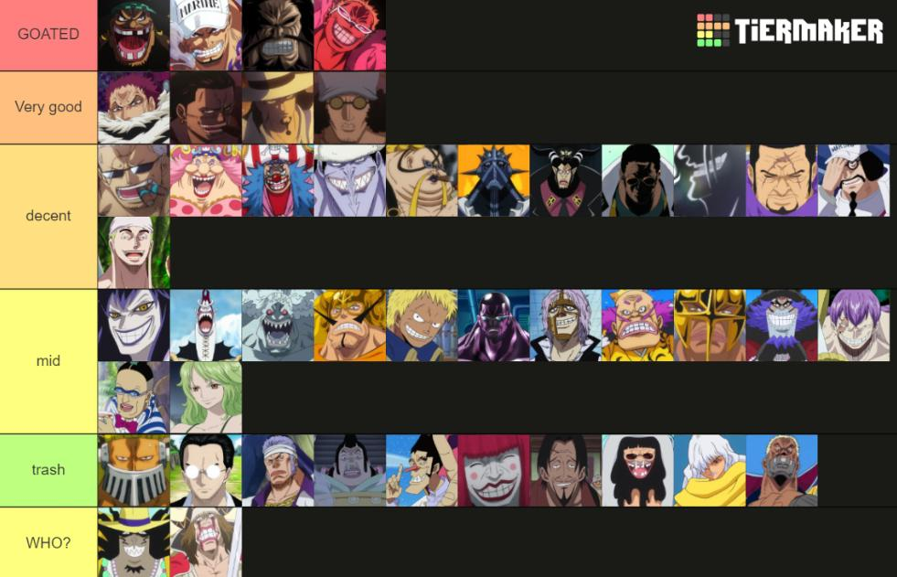

Imágenes
Haz clic aquí para ver contenido buenardo ;v
Párrafo 1
Párrafo 1
Los Cinco Ancianos están muy preocupados por Imu, pero el gobernante no ve otra opción dadas las maquinaciones de la historia. Mientras los Sombrero de Paja se recuperan tras someter a los Caballeros de Dios, presencian el advenimiento de Imu al Castillo Aurust, rodeado de grandes llamas negras que dan vida a los árboles y edificios.
Lista de Mugiwaras
Personajes:
- Monkey D. Luffy
- Roronoa Zoro
- Sanji
- Nami
- Usopp
- Tony Tony Chopper
- Nico Robin
- Franky
- Brook
Lista de Enemigos
Personajes:
- Marshall D. Teach (Blackbeard)
- Edward Newgate (Whitebeard)
- Mariejois
